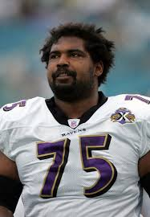
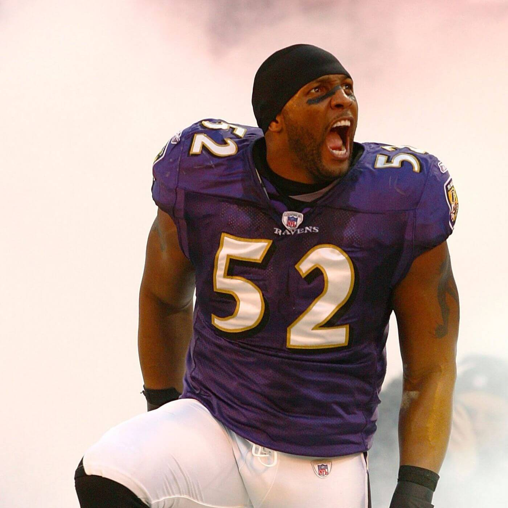
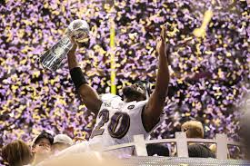

Raven DNA
Our greatness
This is what makes the Ravens, the Ravens. We hit hard, don't back down, and don't accept mediocre as good enough. We have tradition of winning with defense and have maintained an elite defense that has spanned decades and includes Hall of Fame players.
Our management is perhaps our greatest skill. We draft the best players because we know how to scout the best players. We attract the best players because at Baltimore, there always is a shot at a SuperBowl.
The 2004 Defensive Player of the Year played 11 seasons after being drafted by the Ravens He has a SuperBowl victory, records in the NFL including the TWO longest interception returns, and interception return yards. Nicknamed the "Ball Hawk" he is considered one of the greatest safeties in the game.
A raven his whole career, he was officially the first draft pick for the Baltimore Ravens. He has a Superbowl victory and is in the college and NFL Hall of Fame. Playing as a tackle this was someone you definitely wanted blocking for you. A pro-bowler every year after his rookie season, he is considered one of the best tackles in the game.
The legend. Ray Lewis was the face of the incredible Baltimore Ravens defense. A TED-Talk speaker, his story is the stuff of legend, wanting to be bigger and stronger to protect his family. As a team captain, he led the ravens to Superbowl victories and may very well be the greatest Linebacker in the game
Winners against the Giants 34-7. Ray Lewis ended up taking MVP Honors, this was a defensive victory as the offense was a bit mediocre. This game symbolizes the supremacy of Ravens defenses, attracting the incredible talent it does.
Also known as the "Harbaugh Bowl", where the two brothers faced off, John Harbaugh and the Ravens came away victorious against the 49ers 34-31. Handing the 49ers their first SuperBowl loss in franschise history. This is the infamous SuperBowl that had a power outage during the game, earning a second nickname of "Blackout Bowl"